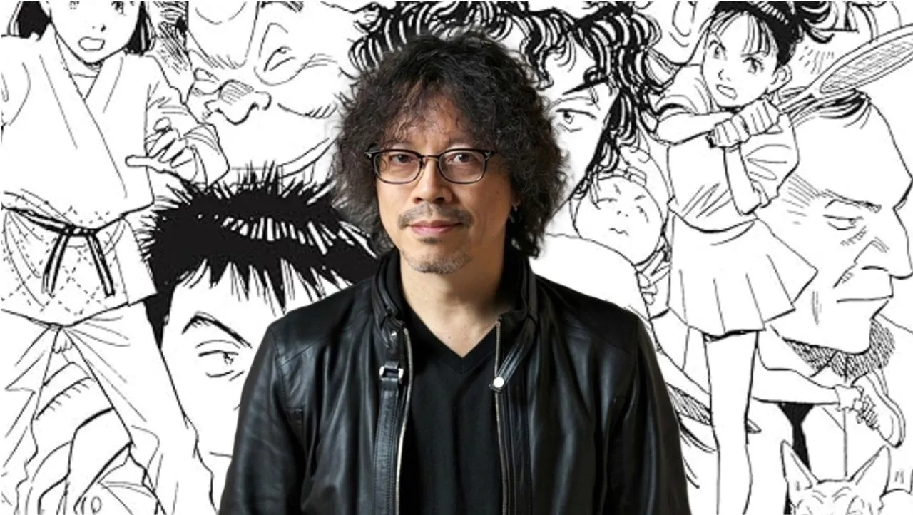
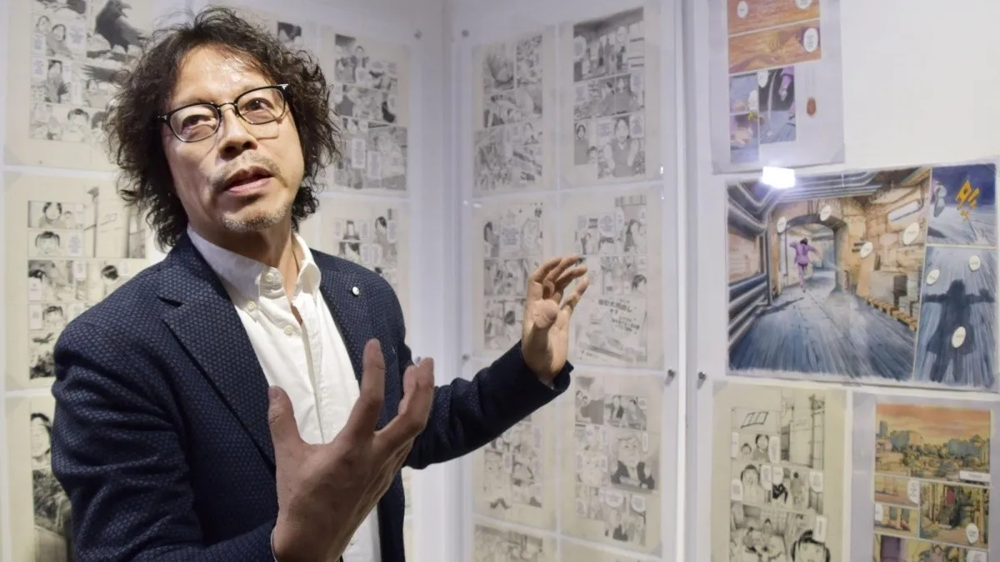
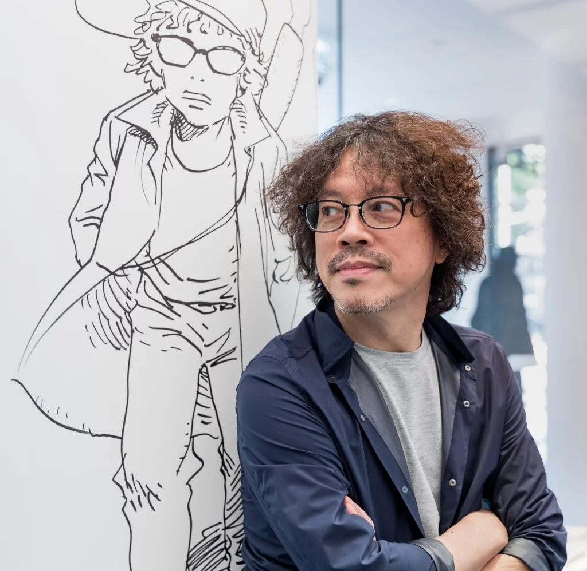

La vida de Naoki Urasawa
Naoki Urasawa nació el 2 de enero de 1960, en Fuchū, Tokio, Japón. Desde joven, demostró un interés notable en el arte y la narrativa. Después de completar sus estudios, ingresó en la Universidad de Meisei, donde continuó desarrollando sus habilidades creativas. Su carrera en el mundo del manga comenzó en la década de 1980 cuando se unió al estudio de mangaka Kazuo Koike, conocido por su trabajo en "Lone Wolf and Cub." Durante este período, Urasawa aprendió las complejidades del oficio y perfeccionó su estilo artístico.
En la década de 1990, Urasawa emergió como un creador de manga innovador. Su capacidad para tejer narrativas complejas con personajes multidimensionales lo llevó a ganar reconocimiento en la industria. A lo largo de los años, ha experimentado con géneros diversos, desde el thriller psicológico hasta la ciencia ficción, ofreciendo siempre obras que desafían las expectativas. Su contribución al manga va más allá de las fronteras de Japón; sus obras han sido traducidas a varios idiomas y han ganado seguidores en todo el mundo. La habilidad de Urasawa para explorar temas profundos y su enfoque maduro han marcado una huella duradera en la historia del manga.
Fuera de su trabajo creativo, Naoki Urasawa es conocido por ser una figura discreta y centrada en su arte. Su impacto en la cultura del manga y su capacidad para cautivar a lectores con historias inolvidables lo han convertido en uno de los mangakas más destacados de su generación. Su contribución al manga va más allá de las fronteras de Japón; sus obras han sido traducidas a varios idiomas y han ganado seguidores en todo el mundo. La habilidad de Urasawa para explorar temas profundos y su enfoque maduro han marcado una huella duradera en la historia del manga.
Urasawa es conocido por su estilo distintivo y su capacidad para crear historias profundas y emocionantes. Su influencia en el manga se extiende más allá de Japón, y sus obras han sido elogiadas por la crítica y los fanáticos del manga en todo el mundo.